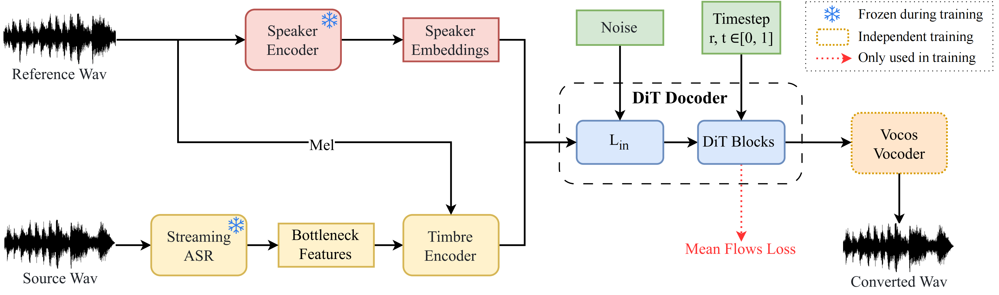

MeanVC:
Lightweight and Streaming Zero-Shot Voice Conversion via Mean Flows
Guobin Ma1, Jixun Yao1, Ziqian Ning1, Yuepeng Jiang1, Lingxin Xiong2, Lei Xie1*, Pengcheng Zhu2*
1Audio, Speech and Language Processing Group (ASLP@NPU), School of Computer Science,
Northwestern Polytechnical University, Xi’an, China
2 Geely Automobile Research Institute (Ningbo) Company Ltd, Ningbo, China
Abstract Zero-shot voice conversion (VC) aims to transfer timbre from a source speaker to any unseen target speaker while preserving linguistic content. Growing application scenarios demand models with streaming inference capabilities. This has created a pressing need for models that are simultaneously fast, lightweight, and high-fidelity. However, existing streaming methods typically rely on either autoregressive (AR) or non-autoregressive (NAR) frameworks, which either require large parameter sizes to achieve strong performance or struggle to generalize to unseen speakers. In this study, we propose MeanVC, a lightweight and streaming zero-shot VC approach. MeanVC introduces a diffusion transformer with a chunk-wise autoregressive denoising strategy, combining the strengths of both AR and NAR paradigms for efficient streaming processing. By introducing mean flows, MeanVC regresses the average velocity field during training, enabling zero-shot VC with superior speech quality and speaker similarity in a single sampling step by directly mapping from the start to the endpoint of the flow trajectory. Additionally, we incorporate diffusion adversarial post-training to mitigate over-smoothing and further enhance speech quality. Experimental results demonstrate that MeanVC significantly outperforms existing zero-shot streaming VC systems, achieving superior conversion quality with higher efficiency and significantly fewer parameters.
Contents
This page is for research demonstration purposes only.
Model Overview

Figure 1. Overall architecture of our proposed MeanVC.
Zero-shot Results
Zero-shot VC demos for speakers collected from the speech corpus and internet.
| Source | Reference | StreamVoice | Seed-VC | MeanVC |
|---|---|---|---|---|